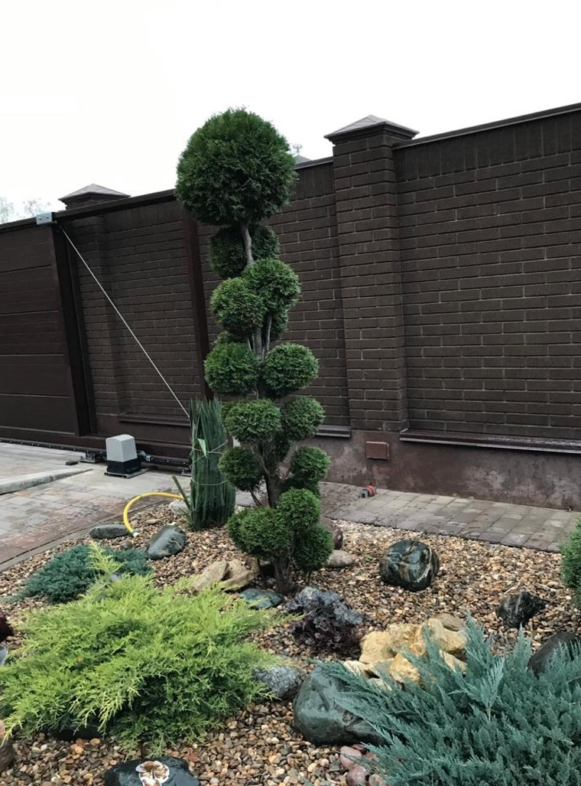
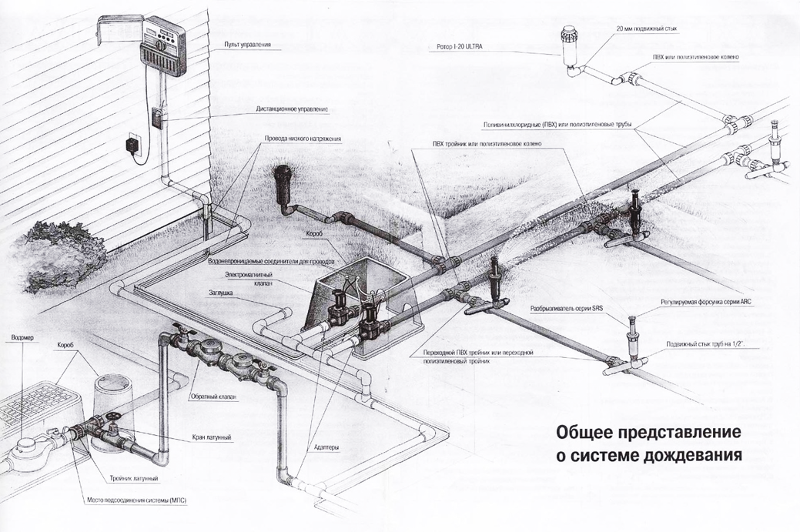
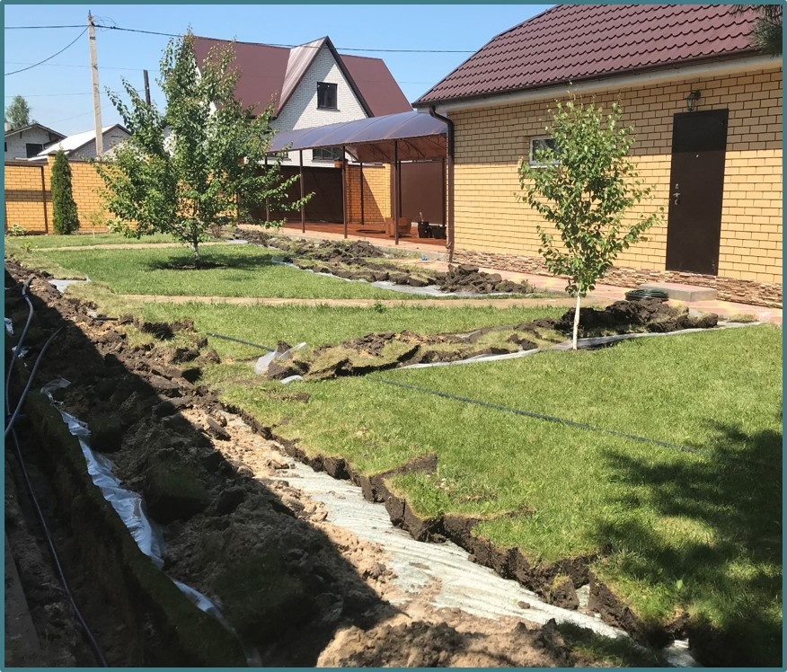
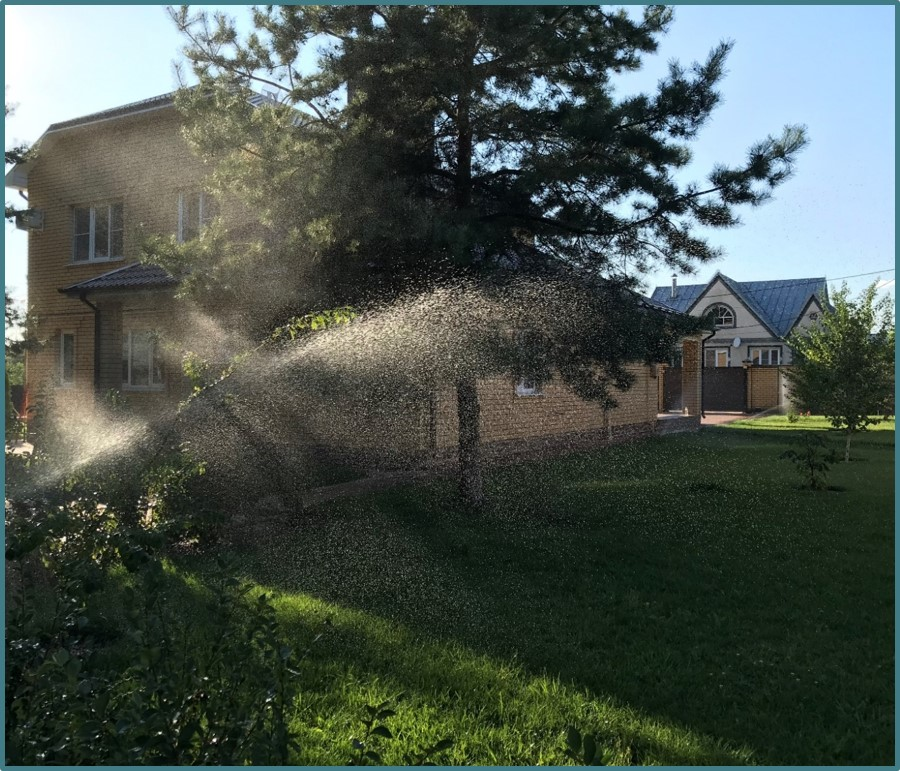
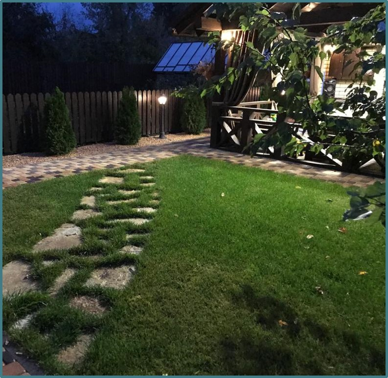
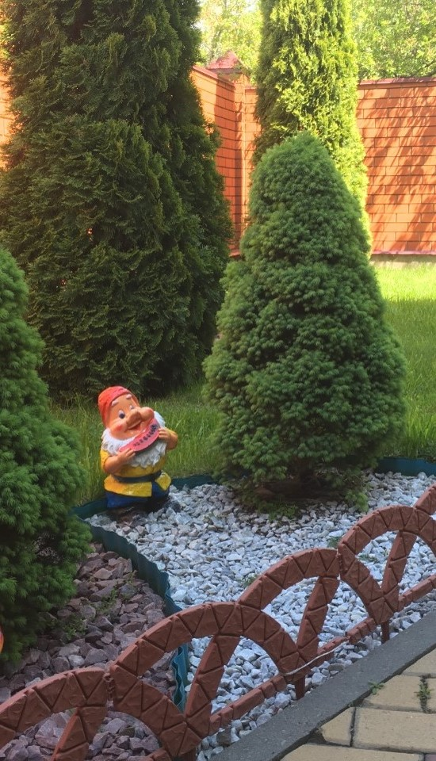
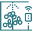

МЫ ЗНАЕМ С КАКИМИ ПРОБЛЕМАМИ ВЫ СТАЛКИВАЕТЕСЬ
Полив занимает много времени
Газон желтеет,цветы гибнут

Большой расход ресурсов
Как вырастить и сохранить цветники?
Как благоустроить территорию?
Как обустроить полив на время отпуска?
Можно ли сделать самому?
Страшно копать уже готовый газон…
Как благоустроить территорию?
Как обустроить полив на время отпуска?
Можно ли сделать самому?
Страшно копать уже готовый газон…

СИСТЕМА АВТОМАТИЧЕСКОГО КАПЕЛЬНОГО И СТРУЙНОГО ПОЛИВА
Это сложный инженерно-технический комплекс, где, используя разный тип оросительного оборудования
для разных растений, подбирается оптимальный полив и внесение удобрений

Согласны, звучит и выглядит сложно… Сейчас расскажем понятнее
ЧТО МОЖНО ПОЛИВАТЬ?
Любые зеленые насаждения для улучшения внешнего вида
- Натуральные газоны
- Клумбы и цветники
- Кустарники
- Деревья
полив улучшает микроклимат участка, так как уменьшает перенос пыли и аллергенов
Любые зеленые насаждения для улучшения урожая
- Виноградники
- Фруктовые деревья
- Поля с аграрными культурами
- Тепличные культуры
полив + внесение удобрений по заданному графику без вашего участия
Искусственные покрытия для улучшения характеристик
- Искусственные газоны
- Покрытия с резиновой крошкой
полив искусственного газона продляет его эксплуатацию в 2 раза и делает безопасным
игры
на
нем
ГДЕ ВНЕДРЯЕМ АВТОПОЛИВ?
- Сельское хозяйство
- Фермерские хозяйства
- Тепличные хозяйства
- Приусадебные участки
- Стадионы
- Конюшни
- Гольф-поля
- Парки, скверы
- Ботанические сады
- Питомники растений
- Магазины для садоводов
- Гостиницы
- Базы отдыха
- Бизнес-клубы
- Коттеджные поселки
Орошение
«туманом»
«туманом»
- теплиц
- зимнего сада
- незакрытых зон отдыха
- навесов из поликарбоната
Регулирование микроклимата – в жаркую погоду на открытых пространствах понижается
температура с помощью охлажденного «тумана»
Это газон, который восстанавливается после монтажа автополивочной системы
ДО И ПОСЛЕ
До
После

КАК ВЫГЛЯДИТ ПОЛИВ
Как выглядит полив
Участок ухоженный радует глаз


Мы снимаем не только ваши запросы, но показываем возможные проблемы, которые могут
возникнуть
позже и решаем их еще на стадии проектирования
Например, гибкость переделки полива при изменения ландшафтного дизайна или пересадки деревьев, более автономное использование теплиц,удобство пользования детскими площадками и т.п.
Например, гибкость переделки полива при изменения ландшафтного дизайна или пересадки деревьев, более автономное использование теплиц,удобство пользования детскими площадками и т.п.
Кроме того, мало какая система, работающая на улице может похвастаться сроком службы более 10
лет.
Мы устанавливаем именно такую
К НАМ ОБРАЩАЮТСЯ
ФИЗИЧЕСКИЕ ЛИЦА
- Освобождаем от сложной рутинной работы
- Помогаем сделать участок зеленым и чистым
АДМИНИСТРАЦИИ И КОММЕРЧЕСКИЕ ОРГАНИЗАЦИИ
- Помогаем благоустраивать территории
- Экономить финансы на обслуживании
- Внедрять инновационные технологии
СЕЛЬСКОХОЗЯЙСТВЕННЫЕ ПРОИЗВОДСТВА
- Помогаем увеличить урожайность культур
- Экономить ресурсы
- Повышать доходность бизнеса
ЛАНДШАФТНЫЕ ДИЗАЙНЕРЫ
- Помогаем внедрить систему «умный дом»
- Ландшафтное освещение
- Автоматический полив
ТАК КАКИЕ БЫВАЮТ ВАРИАНТЫ ПОЛИВА?
| Вид полива | Что из себя представляет | |
|---|---|---|
| Капельный полив | Надземный монтаж труб с капельницами различного диаметра и водовылива, рассчитанный под конкретное растение | |
| Прикорневой полив | Монтаж полива производится баблерами с подземными диффузорами различной глубины для внесения воды к корням и к стволовой части | |
| Полив дождевателями | Скрытый монтаж дождевателей с выдвижной штангой от 4см до 30см, радиусом полива от 1м до 40м и точно прогнозируемым орошением | |
| Полив микродождевателями | Наружный монтаж дождевателей радиусом действия до 2.5м | |
|  | Водяные пушки | Открытый монтаж с радиусом полива от 12м до 80м, может быть мобильными или стационарными |
| «Антивандальный» подземный полив | Скрытый монтаж специальных капельных трубок с защитой от корней на глубине 10-15см. Все трубки оборачиваются и укладываются на флис |
Орошение «туманом» работает как уличный кондиционер. А еще у вас решается вопрос с подкормкой.
растений и освещением
| Встраивается в систему автополива | Как это реализуется | |
|---|---|---|
| Автоматизация внесения удобрений | Автоматизация питания растений производится жидкими удобрениями по двум вариантам: полностью автономное (без электричества) и дистанционно | |
| Орошение «туманом» (белое) | Охлаждение и увлажнение по заданным параметрам с помощью мелкой дисперсии создаваемой форсунками под высоким давлением «сверху-вниз» | |
| Уличное освещение (Бежевое) | Монтаж и автоматизация освещения различного вольтажа от водоемов до дорожек и беседок |
1
АВТОМАТИЧЕСКИЙ ПОЛИВ
для участков прямоугольной формы
- Подземный монтаж труб и кабелей, материалы, доставка
- Открытая установка накопительной емкости под воду
- Только струйный полив (дождеватели)
- Гарантия на материалы от производителя (12 месяцев)
- Гарантия на монтаж 5 лет
12 000 руб./сотка от 10 соток
2
АВТОМАТИЧЕСКИЙ ПОЛИВ
для участков прямоугольной формы
- Подземный монтаж труб и кабелей, материалы, доставка
- Открытая установка накопительной емкости под воду
- Только струйный полив (дождеватели)
- Гарантия на материалы от производителя (12 месяцев)
- Гарантия на монтаж 5 лет
12 000 руб./сотка от 10 соток
3
АВТОМАТИЧЕСКИЙ ПОЛИВ
для участков прямоугольной формы
- Подземный монтаж труб и кабелей, материалы, доставка
- Открытая установка накопительной емкости под воду
- Только струйный полив (дождеватели)
- Гарантия на материалы от производителя (12 месяцев)
- Гарантия на монтаж 5 лет
12 000 руб./сотка от 10 соток
ВАШИ ПРЕИМУЩЕСТВА
Компания «Мастер Липецк» обладает всеми необходимыми ресурсами технологиями и опытом для
реализации автоматических систем полива любой сложности
НАДЕЖНОСТЬ МОНТИРУЕМЫХ СИСТЕМ
За счет соответствия оборудованияи материалов задачам наших клиентов + внедрение
собственных
технических решений
ОПЫТ РАБОТЫ С ПРОЕКТАМИ РАЗЛИЧНОЙ СЛОЖНОСТИ
8 лет специализируемся на монтаже систем автополива различной сложности на территории
Липецкой и Воронежской областей
РАБОТА ВСЕГДА В ИНТЕРЕСАХ ЗАКАЗЧИКА
Наша миссия в работе: учет потребностей клиентов – основа долгосрочного партнерства
ДОЛГОВЕЧНОСТЬ И БЕЗОТКАЗНОСТЬ СИСТЕМ
Безотказность работы системы, работаем только с качественным оборудованием от
официальных
дистрибьютеров автополивочных систем в России
ЭТАПЫ НАШЕГО ВЗАИМОДЕЙСТВИЯ
ОПРЕДЕЛЯЕТЕ ЧТО ВЫ ХОТИТЕ
Возьмите план своего участка (если есть, если нет нарисуйте от руки), укажите на нем, что вы хотите
Если нужна консультация поможем и все расскажем
Для вашего удобства можно посмотреть образцы в нашем офисе
ОТПРАВЛЯЕТЕ НАМ ЗАЯВКУ
тел.8-910-257-59-31 через WhatsApp, viber или на почту masterlipetsk1@yandex.ru
ЗАМЕР И РАСЧЕТ
После согласования условий работы к вам выезжает инженер
Перед началом: определяем место складирования материалов и инструмента, какие насаждения и дорожки защитить во время работ
МОНТАЖ СИСТЕМ
В течении 2-5 рабочих дней начинаем монтаж автополива После прокладки трубопоровода производим проверку работоспособности системы
ПУСКО-НАЛАДКА СИСТЕМЫ ПОЛИВА
Приводим ваш участок в первоначальный вид Настраиваем полив по времени, интенсивности, сектору полива
Обучаем пользованию системой полива
РАСШИРЕННАЯ ГАРАНТИЯ
Единственные в России предоставляем расширенную гарантию при заключении договора на
сервисное
обслуживание
Гарантия на монтаж 10 лет, на оборудование 5 лет
Единственные в Липецкой области предоставляем вам подменное оборудование на время ремонта
В подменное оборудование входит панель управления, клапана зонные 1д США, поливочные головки
Сша, ремкомплект капельной линии, насос мощностью 130л/мин Италия, автоматика для насоса
Цель нашей работы - долгосрочное сотрудничество, которое
базируется на работе в интересах клиентов
3года
гарантия на оборудование
5года
гарантия на монтаж систем
- Мы за экономию средств наших клиентов, поэтому работаем только с качественными материалами
- Техническая поддержка по инженерным коммуникациям, графику полива и зеленым насаждениям
- Бесплатная диагностика систем полива